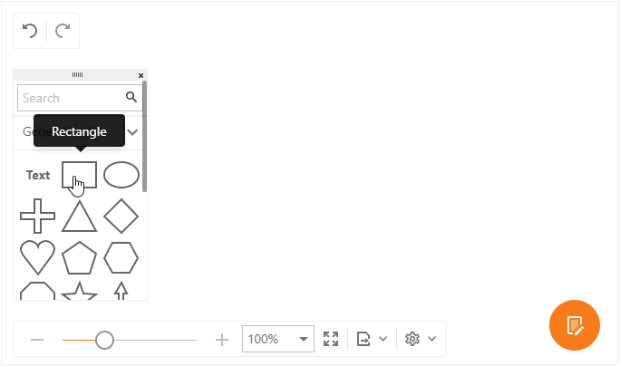
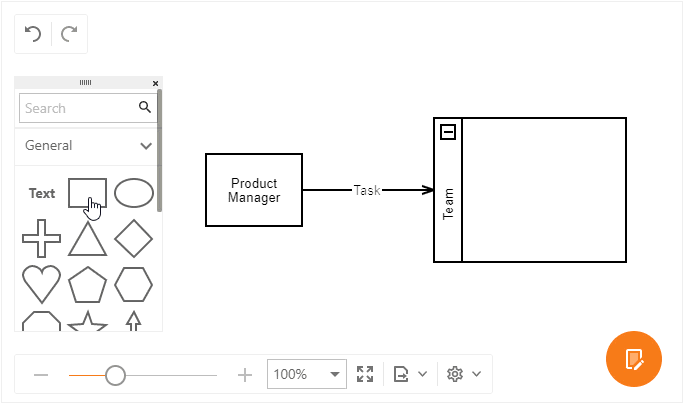
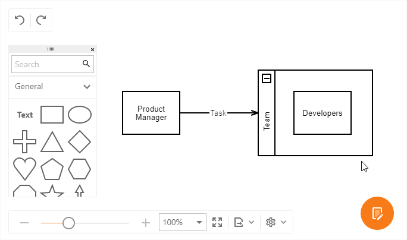
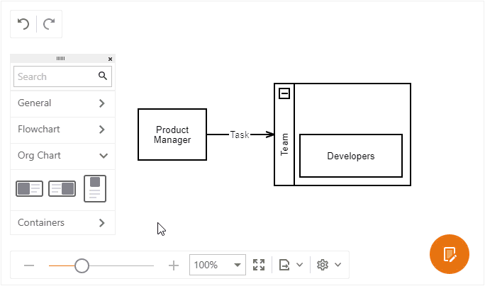
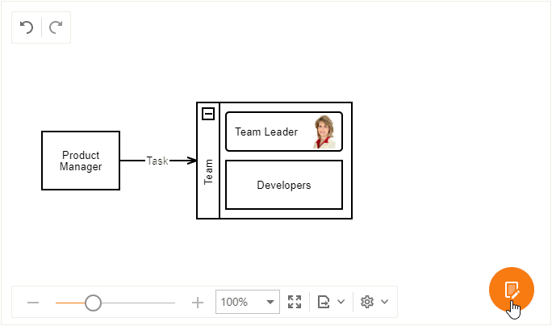

Create a New Chart
This topic explains how to create a new chart and customize its settings.
Add a Shape
Drag a shape from the Toolbox onto the page.
Double click the shape to add/edit its text.

Connect Shapes
Add another shape to the chart.
Hover the mouse pointer over a shape to display its connection points.
Hover a point, press the left mouse button, drag the connector to another shape's connection point, and release the mouse button. Now, if you move a shape, the connector stretches to it.
Double click the connector to add text. You can use the mouse to move the text along the connector.

Place a Shape Into a Container
You can arrange shapes into collapsible horizontal and vertical containers.
Drag a shape over a container (this highlights the container) and drop the shape.

Resize a Shape
Click a shape to select it.
Drag the squares at the shape's borders and corners to resize the shape.

Insert an OrgChart Shape (Shape with Image)
Drag a shape from the Org Chart toolbox group onto the page.
Double click the shape to change its text.
Right click the shape to invoke the context menu. Select the Insert Shape Image... command.
Select the shape image and click OK.
To change or delete the image, select the corresponding command in the context menu.

Customize Shape and Connector Style Settings
Select a shape, connector, or group of elements.
Click the Properties button to invoke the Properties toolbar.
Use the editors on the Style tab to customize style settings.
